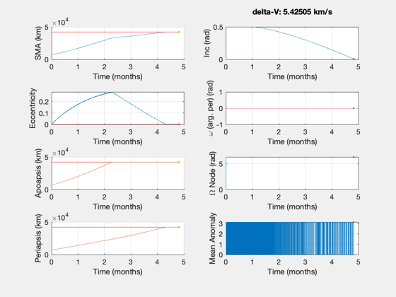
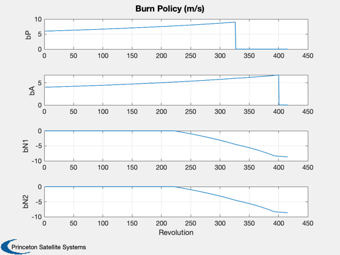
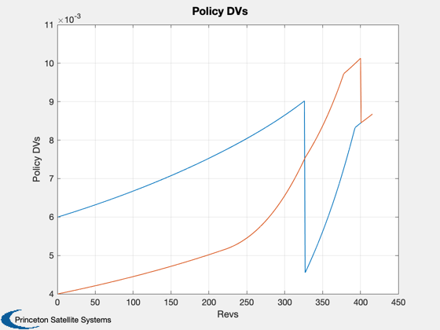
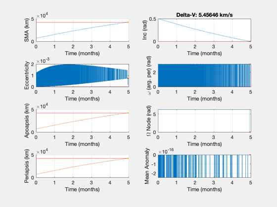
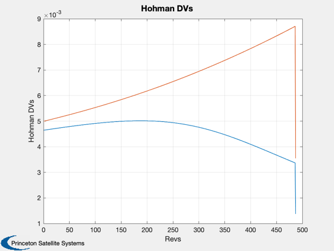

Contents
Compare a policy demo to an iterative Hohmann demo
For this policy the two methods produce very similar results.
See also: PropagateBurnPolicyImpulsive
%-------------------------------------------------------------------------- % Copyright (c) 2019 Princeton Satellite Systems, Inc. % All rights reserved. %--------------------------------------------------------------------------
First, the impulsive policy
The default mission is LEO to GEO with plane change. The burns are in the polar frame.
d = PropagateBurnPolicyImpulsive; d.ap = [0.004]; d.per = [0.006]; d.inc1 = [0 0 0.005]; d.inc2 = [0 0 0.005]; StructToText(d) polarFrame = OTFrame('polar'); % Propagate the default policy [burns,out] = PropagateBurnPolicyImpulsive( d ); [absTimes] = BurnTimesImpulsive(d.el0,burns); fprintf('Policy delta-V: %g km/s\n',SumBurnsDV(burns,polarFrame)) fprintf('Policy transfer duration: %g days\n',absTimes(end)/86400); PlotElementsImpulsive(d.el0,burns,OTFrame('polar'),d.el1); subplot(4,2,2) title(sprintf('delta-V: %g km/s\n',SumBurnsDV(burns,polarFrame))) Plot2D(1:size(out.policy,1),out.policy'*1e3,'Revolution',{'bP','bA','bN1','bN2'},'Burn Policy (m/s)') dVs = burns(:,1)'; dVA = burns(1:2:length(dVs)); dVB = burns(2:2:length(dVs)); Plot2D(1:length(dVA),[dVA;dVB],'Revs','Policy DVs')
el0 (1,6): 7000.000000 0.500000 0.000000 0.000000 0.001000 0.000000 el1 (1,6): 42167.000000 0.000000 0.000000 0.000000 0.000000 0.000000 ap: 0.004 per: 0.006 inc1 (1,3): 0.000000 0.000000 0.005000 inc2 (1,3): 0.000000 0.000000 0.005000 Isp: 1000 tolInc: 0.01 tolAp: 0.005 tolEcc: 0.005 dvMax: 5 verbose: 0 Policy delta-V: 5.42505 km/s Policy transfer duration: 146.64 days  
This acceleration and burn time give similar delta-V's
The Hohmann function produces burns in the LVLH frame.
lvlhFrame = OTFrame('lvlh'); accel0 = 1e-5; % km/s2 burnTime = 500; % seconds frac = 0.1; % orbit fraction, limited by burnTime burnsH = IterativeHohmannAccel( 7000, 42167, -0.5, accel0, d.Isp, frac, burnTime ); [absTimes] = BurnTimesImpulsive([7000 0.5 0 0 0 0],burnsH,lvlhFrame); fprintf('\nHohmann delta-V: %g km/s\n',SumBurnsDV(burnsH,lvlhFrame)) fprintf('Hohmann transfer duration: %g days\n',absTimes(end)/86400); PlotElementsImpulsive([7000 0.5 0 0 0 0],burnsH,lvlhFrame,d.el1); subplot(4,2,2) title(sprintf('Delta-V: %g km/s',SumBurnsDV(burnsH,lvlhFrame))) dVs = burnsH(:,1)'; dVA = burnsH(1:2:length(dVs)); dVB = burnsH(2:2:length(dVs)); Plot2D(1:length(dVA),[dVA;dVB],'Revs','Hohman DVs') %--------------------------------------
Hohmann delta-V: 5.45646 km/s Hohmann transfer duration: 151.11 days 